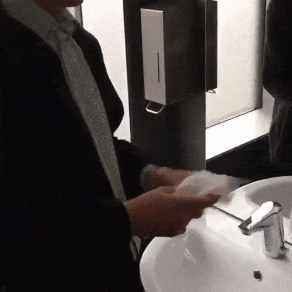
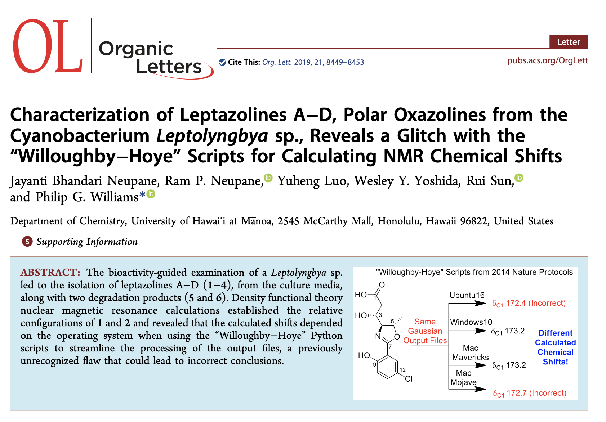

Testing and continuous integration
Testing your code
- How do you know your code gives the right answers?
- … what about after you make changes?
- Legacy code: “code without tests” (Michael Feathers, Working Effectively with Legacy Code)
Testing your code
when to test: always.
where to test: external test suite.
Example: tests subdirectory inside package.
Perfect is the enemy of good; a basic level of tests is better than nothing. But a rigorous test suite will save you time and potential problems in the long run.
Why test?
Testing is a core principle of scientific software; it ensures results are trustworthy.
Scientific and engineering software is used for planes, power plants, satellites, and decisionmaking. Thus, correctness of this software is pretty important.
And we all know how easy it is to have mistakes in code without realizing it…
Testing important for contributions
- As a contributor, how do I know if my PR hasn’t broken anything?
- As a commiter, how do I know if your PR is ok?
- Unit tests are often a great repository of how different features of a library actually work
What and how to test?
def kepler_loc(p1, p2, dt, t):
'''Use Kepler's Laws to predict location of celestial body'''
...
return p3def test_kepler_loc():
p1 = jupiter(two_days_ago)
p2 = jupiter(yesterday)
exp = jupiter(today)
obs = kepler_loc(p1, p2, 1, 1)
if exp != obs:
raise ValueError("Jupiter is not where it should be!")What is a test?
Tests compare expected outputs versus observed outputs for known inputs. They do not inspect the body of the function directly. In fact, the body of a function does not even have to exist for a valid test to be written.
def test_func():
exp = get_expected()
obs = func(*args, **kwargs)
assert exp == obsGood idea: test through assertions
For exactness:
def test_kepler_loc():
p1 = jupiter(two_days_ago)
p2 = jupiter(yesterday)
exp = jupiter(today)
obs = kepler_loc(p1, p2, 1, 1)
assert exp == obsFor approximate exactness:
import numpy as np
def test_kepler_loc():
p1 = jupiter(two_days_ago)
p2 = jupiter(yesterday)
exp = jupiter(today)
obs = kepler_loc(p1, p2, 1, 1)
assert np.allclose(exp, obs)Test using pytest
# content of test_sample.py
def inc(x):
return x + 1
def test_answer():
assert inc(3) == 5$ pytestpytest finds all testing modules and functions, and runs them.
Example
$ tree simple_packaging
simple-packaging
├── LICENSE
├── README.md
├── pyproject.toml
├── src
│ └── rosen
│ ├── __init__.py
│ ├── _version.py
│ └── example.py
└── tests
└── test_example.py
4 directories, 7 files$ pip install -e .
$ pytest testsTypes of testing
Kinds of tests
- unit test: interrogate individual functions and methods
- integration test: verify that multiple pieces of the code work together
- regression test: confirm that results match prior code results (“blessed” results, assumed correct)
Developers warn against having unit tests without any integration tests…


Sources: twitter/@ThePracticalDev, twitter/@withzombies
Testing numbers
- When testing using integers, use
assert a == b - When testing using floating-point numbers, use
a == pytest.approx(b)ornp.allclose(a,b), for both scalars and arrays/lists - Both
approx()andallcloseallow you to specify relative and absolute tolerances
Test generators (handy)
import numpy as np
import pytest
# contents of add.py
def add2(x, y):
return x + y
class Test(object):
@pytest.mark.parametrize('exp, x, y', [
(4, 2, 2),
(5, -5, 10),
(42, 40, 2),
(-128, 0, -128),
])
def test_add2(self, x, y, exp):
obs = add2(x, y)
assert pytest.approx(obs) == expTypes of unit tests
- Interior tests: precise points/values do not matter
- edge test: test examines beginning or end of a range
- Best practice: test all edges and at least one interior point.
Corner cases
Two or more edge cases combined:
import numpy as np
def sinc2d(x, y):
'''(Describe the function here)'''
if x == 0.0 and y == 0.0:
return 1.0
elif x == 0.0:
return np.sin(y) / y
elif y == 0.0:
return np.sin(x) / x
else:
return (np.sin(x) / x) * (np.sin(y) / y)Corner cases
import numpy as np
from pytest import approx
from mod import sinc2d
def test_internal():
exp = (2.0 / np.pi) * (-2.0 / (3.0 * np.pi))
obs = sinc2d(np.pi / 2.0, 3.0 * np.pi / 2.0)
assert exp == approx(obs)
def test_edge_x():
exp = (-2.0 / (3.0 * np.pi))
obs = sinc2d(0.0, 3.0 * np.pi / 2.0)
assert exp == approx(obs)
def test_edge_y():
exp = (2.0 / np.pi)
obs = sinc2d(np.pi / 2.0, 0.0)
assert exp == approx(obs)
def test_corner():
exp = 1.0
obs = sinc2d(0.0, 0.0)
assert exp == approx(obs)Test-Driven Development (TDD)
- Concept: Write the tests first.
- Before you write any lines of a function, first write the test for that function.
Initial version
from pytest import approx
from mod import std
def test_std1():
obs = std([0.0, 2.0])
exp = 1.0
assert exp == approx(obs)def std(vals):
# this must be cheating.
return 1.0Improved version
from pytest import approx
from mod import std
def test_std1():
obs = std([0.0, 2.0])
exp = 1.0
assert exp == approx(obs)
def test_std2():
obs = std()
exp = 0.0
assert exp == approx(obs)
def test_std3():
obs = std([0.0, 4.0])
exp = 2.0
assert exp == approx(obs)def std(vals):
# a bit better, but still not quite generic
if len(vals) == 0:
return 0.0
return vals[-1] / 2.0Final version
from pytest import approx
from mod import std
def test_std1():
obs = std([0.0, 2.0])
exp = 1.0
assert exp == approx(obs)
def test_std2():
obs = std()
exp = 0.0
assert exp == approx(obs)
def test_std3():
obs = std([0.0, 4.0])
exp = 2.0
assert exp == approx(obs)
def test_std4():
obs = std([1.0, 1.0, 1.0])
exp = 0.0
assert exp == approx(obs)def std(vals):
# finally some math
n = len(vals)
if n == 0:
return 0.0
mu = sum(vals) / n
var = 0.0
for val in vals:
var = var + (val - mu)**2
return (var / n)**0.5Summary: TDD
- Can be a helpful concept for writing code, when you know what you want your code to do.
- Good idea to write tests early and often
Test coverage
Meaning: percentage of code for which a test exists, determined by number of line executed during tests.
pytest-cov
Instructions:
- Install
pytest-covusingpip install pytest-cov pytest -vv --cov./- Look at your coverage; are you at or near 100%?
- Get more detailed information by having it create a report:
pytest -vv --cov=./ --cov-report html
Test coverage example
# content of test_sample.py
def inc(x):
if x < 0:
return x - 1
return x + 1
def test_answer():
assert inc(3) == 4$ pytest -vv test_sample.py --cov=./
test_sample.py::test_answer PASSED
---------- coverage: platform darwin, python 3.13.1-final-0 -----------
Name Stmts Miss Cover
-----------------------------
test_sample.py 6 1 83%Increasing coverage
# content of test_sample.py
def inc(x):
if x < 0:
return x - 1
return x + 1
def test_answer():
assert inc(3) == 4
def test_answer_negative():
assert inc(-2) == -3$ pytest -vv test_sample.py --cov=./
test_sample.py::test_answer PASSED
test_sample.py::test_answer_negative PASSED
---------- coverage: platform darwin, python 3.13.1-final-0 -----------
Name Stmts Miss Cover
-----------------------------
test_sample.py 8 0 100%Test coverage overview/takeaways
Work towards 100% coverage, but don’t obsess over it.
Use coverage to help identiy missing edge/corner cases.
Continuous integration (CI)
Ensure all changes to your project pass tests through automated test & build process.
Importance of testing + CI for research software

Recent paper found that calculating nuclear magnetic resonance chemical shifts on different operating systems lead to different outputs!
Using Python scripts published in Nature Protocols in 2014, cited over 130 times.
Error due to differences in file sorting across platforms…
Could have easily been caught with a CI system that tested on multiple platforms.
GitHub Actions
GitHub now provides a free CI system called GitHub Actions
$ mkdir -p .github/workflows
$ touch .github/workflows/run-tests.ymlname: Python package
on:
push:
branches: [ main ]
pull_request:
branches: [ main ]
jobs:
build:
strategy:
fail-fast: false
matrix:
os: [ubuntu-latest, macos-latest, windows-latest]
python-version: ["3.9", "3.10", "3.11"]
runs-on: ${{ matrix.os }}
steps:
- uses: actions/checkout@v4
- name: Set up Python ${{ matrix.python-version }}
uses: actions/setup-python@v3
with:
python-version: ${{ matrix.python-version }}
- name: Install dependencies
run: |
python -m pip install --upgrade pip
pip install .
pip install flake8 pytest
- name: Lint with flake8
run: |
# stop the build if there are Python syntax errors or undefined names
flake8 . --count --select=E9,F63,F7,F82 --show-source --statistics
# exit-zero treats all errors as warnings. The GitHub editor is 127 chars wide
flake8 . --count --exit-zero --max-complexity=10 --max-line-length=127 --statistics
- name: Test with pytest
run: |
pytestFun with CI
You can add badges to your README!
Can also add badge for test coverage: https://github.com/marketplace/actions/coverage-badge
CI can also be used to build packages and deploy to PyPI, build documentation, etc.